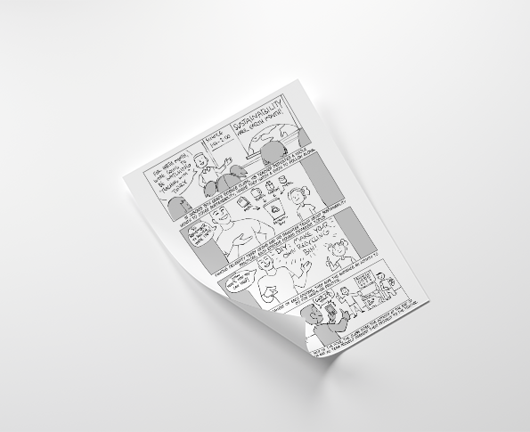

-
Interactive Design Practice Recycle App We designed a solution for addressing climate change through design process including problem framing, design exploration, brainstorming, prototyping, and evaluating.
September 2018-October 2018 @ Indianapolis, IN